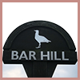
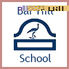
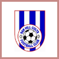

Links
If you would like us to add a link to your website please contact us at info@barhillcricket.org.uk and as long as it fulfils the links criteria it will be added.
Club Shop
Raise Funds
Our Supporters
Bar Hill Links
  
Cricket Links

Links Criteria
We are not a links site. However, there are three types of links we do want to display on this website.
They are:-
Sponsored Links - Sites that contribute towards club funds. Sites deemed inappropriate for
our target audience will be rejected.
Local Links - Sites offering information about Bar Hill or a site from any non-commercial Bar
Hill organisation.
Cricket Links - Sites that offer useful information to cricketers or cricket clubs and
websites of other CCA teams and related bodies.
If you would like a website (whether it's yours or not) to be added to this page please contact us and if we feel it meets one of the above criteria it will be added.